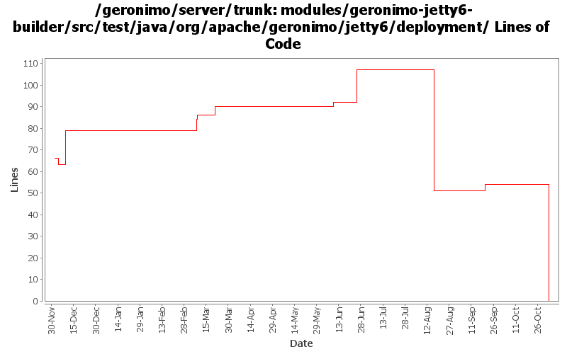

[root]/modules/geronimo-jetty6-builder/src/test/java/org/apache/geronimo/jetty6/deployment

| Author | Changes | Lines of Code | Lines per Change |
|---|---|---|---|
| Totals | 26 (100.0%) | 95 (100.0%) | 3.6 |
| djencks | 15 (57.7%) | 62 (65.3%) | 4.1 |
| kevan | 6 (23.1%) | 29 (30.5%) | 4.8 |
| vamsic007 | 1 (3.8%) | 4 (4.2%) | 4.0 |
| prasad | 4 (15.4%) | 0 (0.0%) | 0.0 |
GERONIMO-3565. Modules distributed amongst framework/modules and plugins
0 lines of code changed in 4 files:
GERONIMO-2964 Cannot specify the Tomcat work directory for a web application
o Committing GERONIMO-2964-trunk.patch submitted in the JIRA
o geronimo-web.xml can now have a "work-dir" tag to specify the work directory to be used by the application.
o For Tomcat this work directory will be relative to "catalina.home"
o For Jetty this work directory will be relative to jetty home which is var/jetty by default.
4 lines of code changed in 1 file:
GERONIMO-3416, start on moving common bits of deployment test infrastructure into kernel test jar. Might also fix GERONMO-3415
1 lines of code changed in 1 file:
GERONIMO-1470 make it clearer that our context root settings override those in application.xml
32 lines of code changed in 1 file:
GERONIMO-2687. Don't construct default and run-as subjects, get them from a login module. Also creates a separate server-security-config for the security config stuff you probably want to change. Also fixes lots of security problems, including mdb run-as handling.
4 lines of code changed in 2 files:
GERONIMO-3034 GERONIMO-2655 New SelectChannel and AJP connectors. Also hook the connectors up to our thread pool
2 lines of code changed in 1 file:
GERONIMO-2949 get the jndi handler outside the context handler: GERONIMO-3000 provide default locale encoding mappings and mimetype mappings: this should fix 2999 for jetty, but I don't know how to test
4 lines of code changed in 2 files:
port rev 514224 to jetty
13 lines of code changed in 1 file:
GERONIMO-2943 add ModuleBuilderExtensions to web module builders
5 lines of code changed in 2 files:
GERONIMO-2641 Add license headers to files. Thanks Jarek!
16 lines of code changed in 1 file:
GERONIMO-2631 parameterize the jsp servlet class name
1 lines of code changed in 3 files:
GERONIMO-2537 Fix notices and src headers in recent jee5 updates. Update Web Console notice.txt w/ ibm donation information, add copyright to assembly notice files, and remove ASF v 1.1 license from source borrowed from xerces project
13 lines of code changed in 5 files:
GERONIMO-2616 Copy jee5 work from sandbox, make it build in normal build
0 lines of code changed in 2 files: